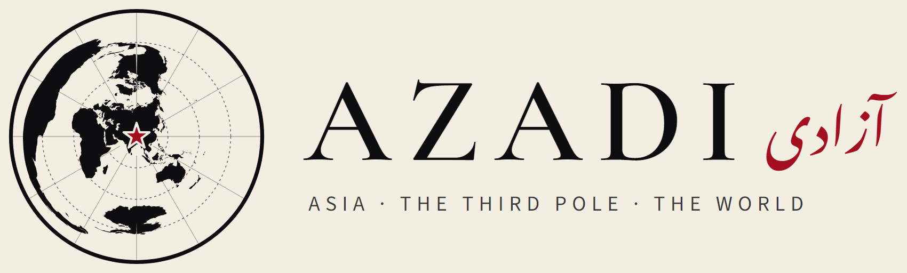
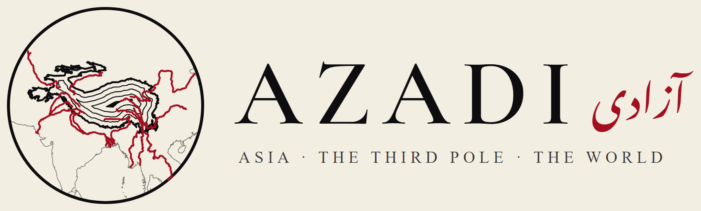
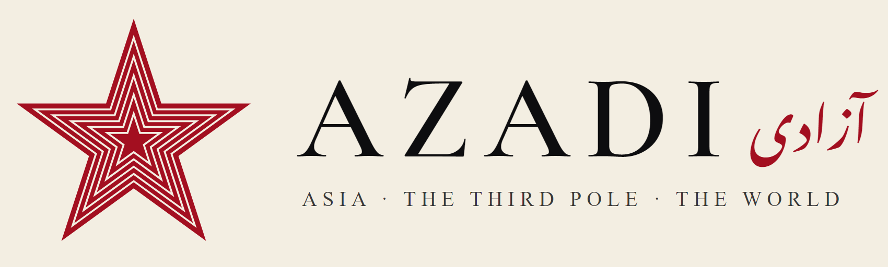
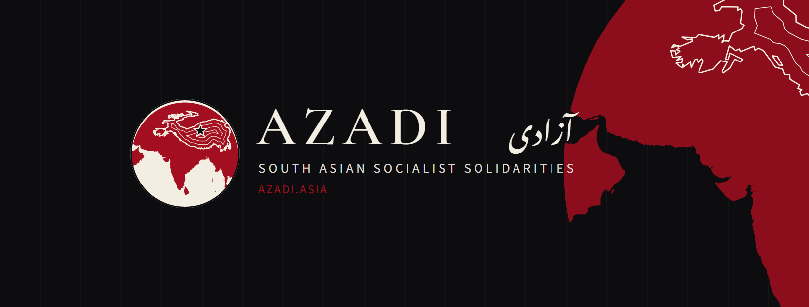
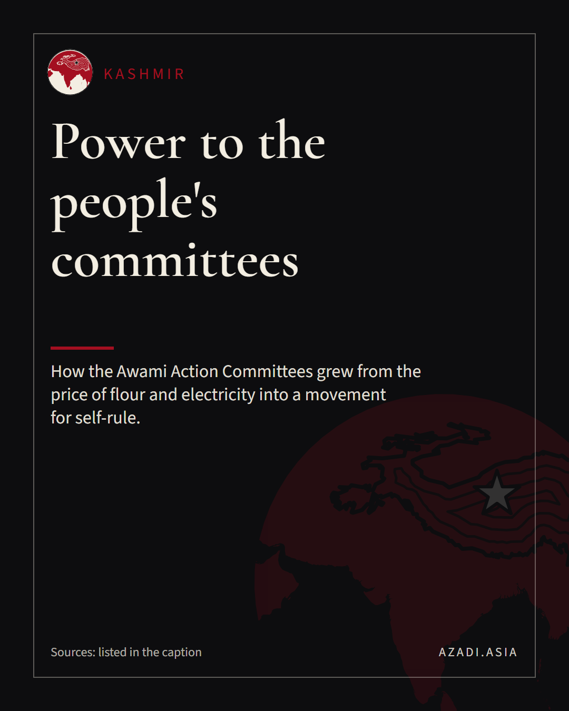
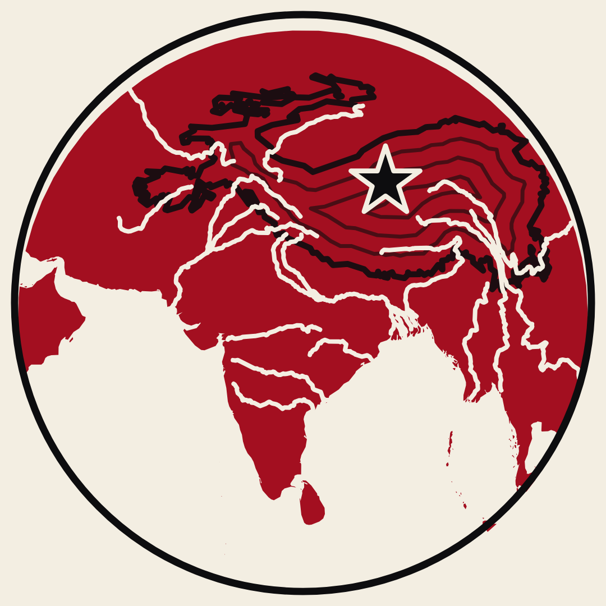
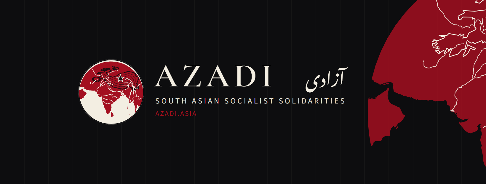
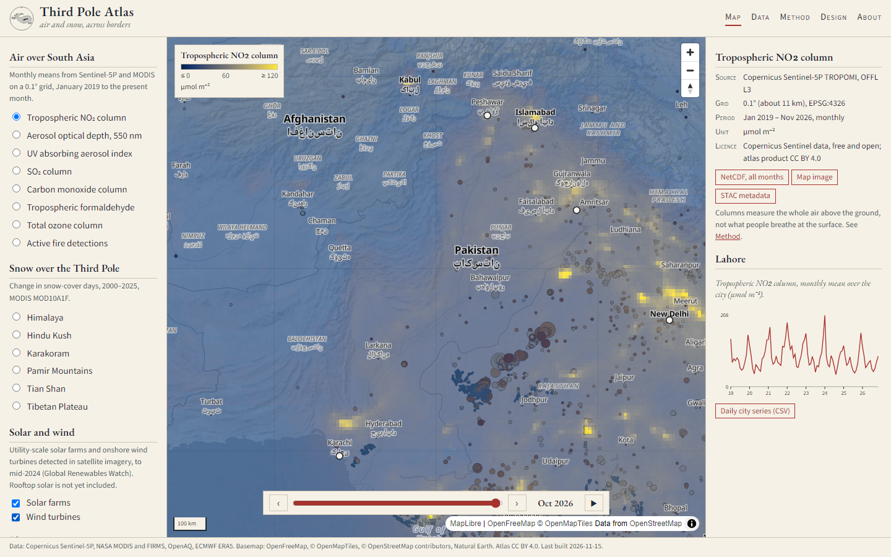

Design
The reasoning behind the look, and every version as it was.
Principles
- Map first, ink second. Paper ground, one dark ink, one red accent. Ornament only where it carries information: the graticule, the scale bar, the legend.
- Classical type. EB Garamond (Garamond's 1592 specimen) for titles and reading; Source Sans 3 for numbers, labels and controls, where a sans reads faster at small sizes. Small capitals for field names, as in printed atlases.
- Honest colour. Perceptually uniform, colour-blind safe ramps; fixed ranges across time; no-data is transparent.
- Borders drawn lightly. Air and snow cross borders; the basemap's boundaries are kept faint and names appear in local scripts.
- Responsive and accessible. One column on phones, map first; keyboard controls; text alternatives for charts; dark mode follows the reader's system.
The mark

build/build_brand.py.Brand files: logo (SVG) · mark · Instagram post · story · Facebook cover · link preview.


Journal
v1, 2026-11-15
First version. Three-column atlas layout (layers, map, information), paper palette, Garamond titles. The first basemap (CARTO raster) refused requests without a key, so the atlas moved to OpenFreeMap vector tiles (free, open, no key) with Natural Earth shaded relief beneath. The partial current month looked patchy as the default view, so the map opens on the last complete month. Low concentrations now fade so the land shows through.
v1.1, 2026-11-15: solar and wind
Added the solar and wind layers: Global Renewables Watch solar farms as circles sized by area and shaded from pale (2017) to deep brown (2024) by construction year, and wind turbines as small slate dots. A "No overlay" choice lets them be read alone. The first view already tells the story: Rajasthan is crowded with farms, Pakistan's side of the border almost empty, because Pakistan's solar boom happened on rooftops, which farm-scale mapping cannot see.
azadi.asia marks v1, 2026-11-15
Three marks generated from data by build/build_azadi_brand.py, in the azadi.asia palette (ink, paper, red):
world, the whole Earth in an azimuthal equidistant projection centred on the Third Pole, with true distance rings
and a red star at the centre; rivers, the Third Pole as contour rings with its great rivers running out in red;
star, a five-pointed star filled with contour lines, a mountain read as a map. Each comes in light, paper, reverse
and one-colour versions, with lockups (AZADI and آزادی) and social formats. First renders clipped the Nastaliq word
(right-to-left anchoring) and overflowed the social titles; both fixed.



azadi.asia social kit v1, 2026-11-15
The Instagram avatar (a red South Asia with mountains and a star) became a true map: Natural Earth land in an equal-area projection centred on 80° E, 24° N, clipped by a circle, with no national borders; the Third Pole as paper contour lines; an ink star at its centre. It holds at 110 px. Around it: Facebook cover (centred for phone crops) and event cover, 4:5 post templates in ink and paper, a story template and eight procedural highlight covers. Fix on the way: the sans font silently fell back to Times because "Source Sans 3" was unquoted (a name ending in a number must be quoted in CSS).


azadi.asia social kit v2, 2026-11-15: rivers
The rivers that leave the Third Pole (Indus and its Punjab tributaries, Ganges, Yamuna, Brahmaputra, Irrawaddy, Salween,
Mekong, Yangtze, Amu Darya, Helmand, Tarim, Narmada, Godavari, Krishna, Mahanadi) are drawn into every mark in cream. With
rivers and contours both cream the small avatar turned to noise, so in v2 the mountains became dark contours and the rivers
stay light: mountains hold, water leaves. v1 files are kept in social/; v2 is in social-v2/
(python build/build_azadi_social.py --version v2).


v1


